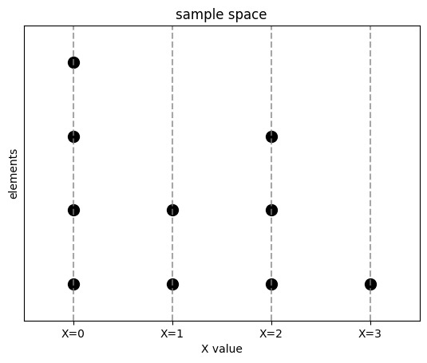

Boostcource Statistics 110의 10강을 듣고 정리. Linearity, Putnam problem, Negative Binomial, St. Petersburg paradox에 대해 설명한다.
Proof of linearlity
문제) 확률변수 \(T\), \(X\), \(Y\)가 있고, \(T = X + Y\)일때, \(E(T) = E(X) + E(Y)\)를 보여라.
즉, 기대값이 선형성을 만족하는지 증명
강의에선 표본 공간의 event를 조약돌로 비유한다. 각각의 조약돌은 어떤 확률로 특정 값에 매핑된다. 조약돌 표본 공간을 Discrete RV 그림으로 나타내면 위와 같다. 4개의 조약돌이 \(X=0\)로 매핑, 2개의 조약돌이 \(X=1\)로 매핑, 3개의 조약돌이 \(X=2\)로 매핑, 1개의 조약돌이 \(X=3\)으로 매핑된다. 위의 표본 공간에서 평균을 구하는 방법은 두 가지가 있다.
- 각 확률변수 X마다 grouping을 해서 비율과 값을 곱해서 더한다. 즉, 가중평균을 구한다.
- 값이 발생한 수(event, 조약돌의 값)를 다 더해서 전체 갯수로 나눈다.
이 두 가지 방법을 식으로 나타내면 다음과 같다.
\[ E(X) = \sum_x xP(X=x) = \sum_s X(s) P(\{s\}) \quad(\text{$P(\{s\})$ is mass of pebbles}) \]
위 식의 \(X(s)\) : X는 확률변수 = 어떤 값으로 매핑하는 함수이고 어떤 조약돌 s를 어떤 값에 매핑한다. \(P(\{s\})\)는 조약돌의 질량. 여기서 각 조약돌은 1의 질량을 가진다. 각각의 방법으로 기대값을 구하는 과정은 다음과 같다.
- 첫 번째 방법 : \(0 \cdot 4/10 + 1 \cdot 2/10 + 2 \cdot 3/10 + 3 \cdot 10\)
- 두 번째 방법 : \((0+0+0+0+1+1+2+2+2+3)/10\)
두 번째 방법을 사용하면 기대값의 선형성을 쉽게 증명할 수 있다.
\[ \begin{align} E(T) & = \sum_s(X+Y)(s) \cdot P(\{s\}) = \sum_s(X(s)+Y(s)) \cdot P(\{s\}) \\ & = \sum_sX(s)\cdot P(\{s\}) \; + \sum_sY(s)\cdot P(\{s\}) \\ & = E(X) + E(Y) \end{align} \]
같은방법으로 \(E(cX) = cE(X)\)도 증명할 수 있다.
Negative Binomial Distribution
음이항분포는 기하분포의 일반화된 형태이다. 음이항분포는 i.i.d \(Bern(p)\) trials의 sequence에서 r번째 성공까지 발생하는 실패 횟수를 나타내는 확률분포이다. 예를들어 1001001001 sequence에서 \(r=4\), 실패횟수 \(n=6\)이다. PMF \(P(X=n)\)은 \(n\)번 실패할 확률이다. PMF 식을 구하려면, \(r-1\)번 성공과 \(n\)번 실패의 combination + 마지막 \(r\)번째 성공으로 구할 수 있다.
\[ P(X=n) = \binom{n+r-1}{r-1} \cdot p^r \cdot (1-p)^n \]
PMF로 기대값 \(E(X)\)를 구하는 것은 어렵지만, 문제를 분해하면 간단해진다.
- \(X_j\)를 j-1번째 성공과 j번째 성공 사이의 실패 횟수로 정의
- 각 \(X_j\)는 기하분포를 따름
\[ \begin{align} E(X) & = E(X_1 + X_2+ \cdots + X_r) = E(X_1) + E(X_2) + \cdots + E(X_r) \\ & = r \cdot q/p \end{align} \]
First Success distribution
First Success distribution은 첫 번째 성공이 나올 때까지의 시행 횟수(성공 포함)를 나타낸다. 이를 확률 변수 \(X\)로 정의하면, \(X \sim FS(p)\)이며 \(p\)는 성공 확률이다. \(X\)는 성공을 포함한 시도 횟수를 나타내므로, \(X\)를 기하 분포 \(Y \sim Geom(p)\), \(X = Y+1\)로 표현할 수 있다. 기하 분포 \(Y \sim Geom(p)\)은 성공을 제외한 실패 횟수를 나타내고, \(X\)를 \(Y\)에 성공 시도를 더한 것으로 표현한다.
\(E(Y)=(1-p)/p\)이고, 선형성을 이용하면
\[ E(X) = E(Y) + 1 = (1-p)/p + 1 = 1/p \]
이는 성공할 확률이 \(1/10\)이라면, 평균적으로 10번 시도하면 성공한다
Gemetric Distribution은 책마다 정의가 다르다. (성공을 포함하는 지, 안하는 지)
2006년 Putnam Competition A4 문제
Putnam 경시대회는 매우 어려운 수학시험이고, 대부분 0점이라고 한다.
1~n개 숫자의 무작위 순열에서 local maxima의 개수에 대한 기댓값을 구하는 문제.
(3) 2 1 4 (7) 5 (6) - 주변보다 큰 수를 local maxima라 하고 여기서 3, 7, 6으로 3개이다.
- indicator RV \(I_j\) 를 사용, \(j\) 위치가 local maxima이면 \(I_j=1\), 아니면 \(I_j=0\)
- \(I_1+\cdots+I_n\)이 local maxima의 개수, \(E(I_1+\cdots+I_n)\)를 구하는 것이 목표
- 중간의 3개의 수 “4 7 5”에서 local maxima가 존재할 확률 = \(1/3\), \(n-2\)개 존재
- 끝 위치의 수 “3 2”에서 local maxima가 존재할 확률 = \(1/2\), \(2\)개 존재
선형성을 이용하면,
\[ E(I_1+\cdots+I_n) = E(I_1)+\cdots+E(I_n) = \frac{n-2}{3} + \frac{2}{2} = \frac{n+1}{3} \]
indicator RV의 기댓값은 사건의 확률과 같다.
상트페테르부르크 역설(St. Petersburg Paradox)
첫 앞면이 나올 때까지의 동전 던지기 횟수를 \(x\)라 할 때, \(2^x\) 달러를 받는 게임의 기댓값 구하기.
\[ E(Y) = \sum_{k=1}^{\infty}2^k \cdot \frac{1}{2^k} = \infty \]
이론적으로는 무한한 기대값을 가지지만, 현실적인 제약으로 1조 달러(\(2^{40}\)) 상한이 있다면, \(E(Y) = \sum_{k=1}^{40} 1 = 40\)처럼 유한한 값을 가진다.
참고
https://en.wikipedia.org/wiki/Event_(probability_theory) https://en.wikipedia.org/wiki/Negative_binomial_distribution https://en.wikipedia.org/wiki/Geometric_distribution https://en.wikipedia.org/wiki/St._Petersburg_paradox